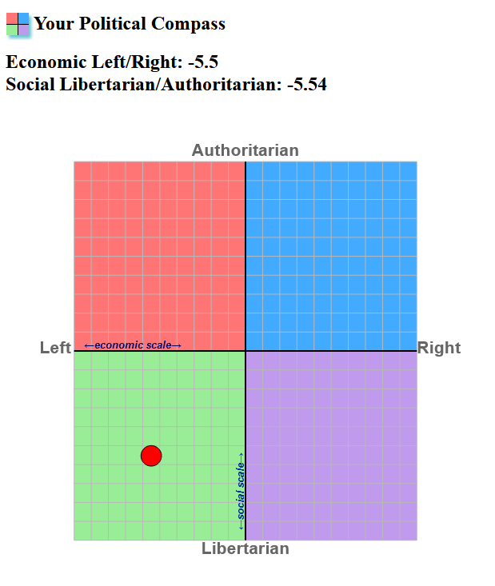

The Political Compass test is a clasic test for ones political ideology.
This test has many flaws, but it can be very fun to see where you lie compared to famous political leaders.
This test was created by Wayne Brittenden in 2001 and ranks the test taker on 2 axes.
The axes are as follows:
North - South
Authoritarian - Libertarian
East - West
Left - Right
This is what a set of results may look like:
